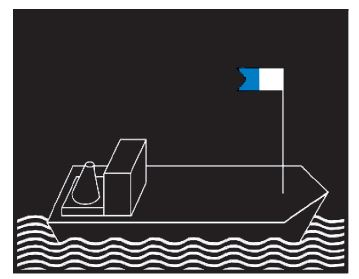
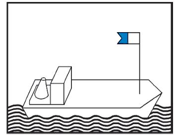
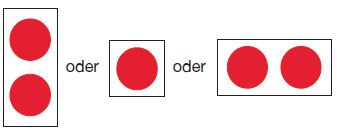
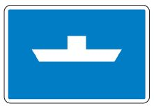
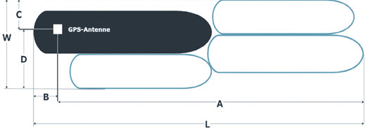
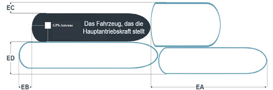

MoselSchPV
Ausfertigungsdatum: 03.09.1997
Vollzitat:
"Moselschiffahrtspolizeiverordnung vom 3. September 1997 (BGBl. 1997 II S. 1670 ), die zuletzt durch Artikel 3 iVm Anlage 5 der Verordnung vom 11. März 2024 (BGBl. 2024 II Nr. 97) geändert worden ist"
| Stand: | Zuletzt geändert durch Art. 3 iVm Anlage 4 V v. 16.2.2022 II 82 |
| Hinweis: | Änderung durch Art. 3 iVm Anlage 7 bis 10 V v. 16.5.2023 II Nr. 141 textlich nachgewiesen, dokumentarisch noch nicht abschließend bearbeitet |
| Änderung durch Art. 3 iVm Anlage 6 V v. 22.11.2023 II Nr. 321 textlich nachgewiesen, dokumentarisch noch nicht abschließend bearbeitet | |
| Änderung durch Art. 3 iVm Anlage 5 V v. 11.3.2024 II Nr. 97 mWv 1.7.2024 noch nicht berücksichtigt |
(+++ Textnachweis ab: 1.10.1997 +++)
(+++ Zur Anwendung v. 1.4.2004 bis zum 31.1.2007 vgl.
V v. 30.3.2004 (MoselSchPV1997AbwV 14) VkBl. 179 +++)
(+++ Veröffentlicht als Anlage zu der Verordnung zur Einführung der
Moselschiffahrtspolizeiverordnung +++)
(+++ Text der Einführungsverordnung siehe: MoselSchPEV 1997 +++)
| Erster Teil | ||||
| Auf der gesamten internationalen Moselstrecke anwendbare Bestimmungen | ||||
| Kapitel 1 | ||||
| Allgemeine Bestimmungen | ||||
| § 1.01 | Begriffsbestimmungen | |||
| § 1.02 | Schiffsführer | |||
| § 1.03 | Pflichten der Besatzung und sonstiger Personen an Bord | |||
| § 1.04 | Allgemeine Sorgfaltspflicht | |||
| § 1.05 | Verhalten unter besonderen Umständen | |||
| § 1.06 | Benutzung der Wasserstraße | |||
| § 1.07 | Anforderungen an die Beladung und Sicht; Höchstzahl der Fahrgäste | |||
| § 1.08 | Bau, Ausrüstung und Besatzung der Fahrzeuge | |||
| § 1.09 | Besetzung des Ruders | |||
| § 1.10 | Mitführen von Urkunden und sonstigen Unterlagen an Bord | |||
| § 1.10a | Ausnahmen für bestimmte Fahrzeuge in Bezug auf Urkunden und sonstige Unterlagen an Bord | |||
| § 1.11 | Mitführen der Moselschifffahrtspolizeiverordnung und des Handbuchs Binnenschifffahrtsfunk an Bord | |||
| § 1.12 | Gefährdung durch Gegenstände an Bord; Verlust von Gegenständen; Schiffahrtshindernisse | |||
| § 1.13 | Schutz der Schiffahrtszeichen | |||
| § 1.14 | Beschädigung von Anlagen | |||
| § 1.15 | Verbot des Einbringens von Gegenständen und anderen Stoffen in die Wasserstraße | |||
| § 1.16 | Rettung und Hilfeleistung | |||
| § 1.17 | Anzeige von Unfällen; festgefahrene oder gesunkene Fahrzeuge | |||
| § 1.18 | Freimachen des Fahrwassers | |||
| § 1.19 | Besondere Anweisungen | |||
| § 1.20 | Überwachung | |||
| § 1.21 | Sondertransporte; Amphibienfahrzeuge; Militärfahrzeuge | |||
| § 1.22 | Anordnungen vorübergehender Art der zuständigen Behörde | |||
| § 1.22a | Anordnungen vorübergehender Art der Moselkommission | |||
| § 1.23 | Erlaubnis besonderer Veranstaltungen | |||
| § 1.24 | Anwendbarkeit der Verordnung auf Häfen, Lade- und Löschplätze | |||
| § 1.25 | Laden, Löschen und Leichtern | |||
| § 1.26 | Sonderrechte der Fahrzeuge der Überwachungsbehörden | |||
| § 1.27 | Anordnungen, Erlaubnisse und Genehmigungen | |||
| Kapitel 2 | ||||
| Kennzeichnung und Tiefgangsanzeiger der Fahrzeuge; Schiffseichung | ||||
| § 2.01 | Kennzeichen der Fahrzeuge, ausgenommen Kleinfahrzeuge und Seeschiffe | |||
| § 2.02 | Kennzeichen der Kleinfahrzeuge | |||
| § 2.03 | Schiffseichung | |||
| § 2.04 | Einsenkungsmarken und Tiefgangsanzeiger | |||
| § 2.05 | Kennzeichen der Anker | |||
| § 2.06 | Kennzeichnung der Fahrzeuge, die Flüssigerdgas (LNG) als Brennstoff nutzen | |||
| Kapitel 3 | ||||
| Bezeichnung der Fahrzeuge | ||||
| Abschnitt I.: Allgemeines | ||||
| § 3.01 | Begriffsbestimmungen und Anwendungen | |||
| § 3.02 | Lichter | |||
| § 3.03 | Flaggen, Tafeln und Wimpel | |||
| § 3.04 | Zylinder, Bälle und Kegel | |||
| § 3.05 | Verbotene oder ausnahmsweise zugelassene Lichter und Sichtzeichen | |||
| § 3.06 | (ohne Inhalt) | |||
| § 3.07 | Verbotener Gebrauch von Lichtern, Scheinwerfern, Flaggen, Tafeln und Wimpeln usw. | |||
| Abschnitt II: Nacht- und Tagbezeichnung | ||||
| Titel A: Bezeichnung während der Fahrt | ||||
| § 3.08 | Bezeichnung einzeln fahrender Fahrzeuge mit Maschinenantrieb | |||
| § 3.09 | Bezeichnung der Schleppverbände in Fahrt | |||
| § 3.10 | Bezeichnung der Schubverbände in Fahrt | |||
| § 3.11 | Bezeichnung gekuppelter Fahrzeuge in Fahrt | |||
| § 3.12 | Bezeichnung der Fahrzeuge unter Segel in Fahrt | |||
| § 3.13 | Bezeichnung der Kleinfahrzeuge in Fahrt | |||
| § 3.14 | Zusätzliche Bezeichnung der Fahrzeuge in Fahrt bei Beförderung bestimmter gefährlicher Güter | |||
| § 3.15 | Bezeichnung der Fahrzeuge in Fahrt, die zur Beförderung von mehr als 12 Fahrgästen zugelassen sind und deren Schiffskörper eine Höchstlänge von weniger als 20,00 m aufweist | |||
| § 3.16 | Bezeichnung der Fähren in Fahrt | |||
| § 3.17 | Zusätzliche Bezeichnung der Fahrzeuge in Fahrt, die einen Vorrang besitzen | |||
| § 3.18 | Zusätzliche Bezeichnung manövrierunfähiger Fahrzeuge in Fahrt | |||
| § 3.19 | Bezeichnung der Schwimmkörper und schwimmenden Anlagen in Fahrt | |||
| Titel B: Bezeichnung beim Stilliegen | ||||
| § 3.20 | Bezeichnung der Fahrzeuge beim Stilliegen | |||
| § 3.21 | Zusätzliche Bezeichnung stilliegender Fahrzeuge bei Beförderung bestimmter gefährlicher Güter | |||
| § 3.22 | Bezeichnung der Fähren, die an ihrer Anlegestelle stilliegen | |||
| § 3.23 | Bezeichnung der Schwimmkörper und schwimmenden Anlagen beim Stilliegen | |||
| § 3.24 | Bezeichnung bestimmter stilliegender Fischereifahrzeuge und der Netze oder Ausleger | |||
| § 3.25 | Bezeichnung schwimmender Geräte bei der Arbeit sowie festgefahrener oder gesunkener Fahrzeuge | |||
| § 3.26 | Zusätzliche Bezeichnung der Fahrzeuge, Schwimmkörper und schwimmenden Anlagen, deren Anker die Schiffahrt gefährden können, und ihrer Anker | |||
| Abschnitt III: Sonstige Bezeichnung | ||||
| § 3.27 | Bezeichnung der Fahrzeuge der Überwachungsbehörden | |||
| § 3.28 | Zusätzliche Bezeichnung der Sondertransporte sowie der Fahrzeuge und schwimmenden Geräte, die Arbeiten im Fahrwasser ausführen | |||
| § 3.29 | Schutz gegen Wellenschlag | |||
| § 3.30 | Notzeichen | |||
| § 3.31 | Hinweis auf das Verbot, das Fahrzeug zu betreten | |||
| § 3.32 | Hinweis auf das Verbot, zu rauchen, ungeschütztes Licht oder Feuer zu verwenden | |||
| § 3.33 | Hinweis auf das Verbot des Stilliegens nebeneinander | |||
| § 3.34 | Zusätzliche Bezeichnung der Fahrzeuge beim Einsatz von Tauchern | |||
| Kapitel 4 | ||||
| Schallzeichen der Fahrzeuge; Sprechfunk; Informations- und Navigationsgeräte | ||||
| Abschnitt I: Schallzeichen | ||||
| § 4.01 | Allgemeines | |||
| § 4.02 | Gebrauch der Schallzeichen | |||
| § 4.03 | Verbotene Schallzeichen | |||
| § 4.04 | Notzeichen | |||
| Abschnitt II: Sprechfunk | ||||
| § 4.05 | Sprechfunk | |||
| Abschnitt III: Informations- und Navigationsgeräte | ||||
| § 4.06 | Radar | |||
| § 4.07 | Inland AIS und Inland ECDIS | |||
| Kapitel 5 | ||||
| Schiffahrtszeichen und Bezeichnung der Wasserstraße | ||||
| § 5.01 | Schiffahrtszeichen | |||
| § 5.02 | Bezeichnung der Wasserstraße | |||
| Kapitel 6 | ||||
| Fahrregeln | ||||
| Abschnitt I: Allgemeines | ||||
| § 6.01 | Fahrt unter Segel | |||
| § 6.02 | Gegenseitiges Verhalten von Kleinfahrzeugen und anderen Fahrzeugen | |||
| § 6.02a | Besondere Fahrregeln für Kleinfahrzeuge | |||
| Abschnitt II: Begegnen und Überholen | ||||
| § 6.03 | Allgemeine Grundsätze | |||
| § 6.04 | Begegnen: Grundregeln | |||
| § 6.05 | Begegnen: Ausnahmen von den Grundregeln | |||
| § 6.06 | (ohne Inhalt) | |||
| § 6.07 | Begegnen im engen Fahrwasser | |||
| § 6.08 | Durch Schiffahrtszeichen verbotenes Begegnen | |||
| § 6.09 | Überholen: Allgemeine Bestimmungen | |||
| § 6.10 | Überholen: Verhalten und Zeichengebung der Fahrzeuge | |||
| § 6.11 | Überholverbot durch Schiffahrtszeichen | |||
| Abschnitt III: Weitere Regeln für die Fahrt | ||||
| § 6.12 | Fahrt auf Strecken mit vorgeschriebenem Kurs | |||
| § 6.13 | Wenden | |||
| § 6.14 | Verhalten bei der Abfahrt | |||
| § 6.15 | Verbot des Hineinfahrens in die Abstände zwischen Teilen eines Schleppverbandes | |||
| § 6.16 | Einfahrt in und Ausfahrt aus Häfen und Nebenwasserstraßen | |||
| § 6.17 | Fahrt auf gleicher Höhe; Verbot der Annäherung an Fahrzeuge | |||
| § 6.18 | Verbot des Schleifenlassens von Ankern, Trossen oder Ketten | |||
| § 6.19 | Schiffahrt durch Treibenlassen | |||
| § 6.20 | Vermeidung von Wellenschlag | |||
| § 6.21 | Zusammenstellung der Verbände | |||
| § 6.22 | Sperrung der Schiffahrt und gesperrte Wasserflächen | |||
| § 6.22a | Vorbeifahrt an schwimmenden Geräten bei der Arbeit sowie an festgefahrenen oder gesunkenen Fahrzeugen | |||
| Abschnitt IV: Fähren | ||||
| § 6.23 | Verhalten der Fähren | |||
| Abschnitt V: Durchfahren von Brücken, Wehren und Schleusen | ||||
| § 6.24 | Durchfahren von Brücken und Wehren: Allgemeines | |||
| § 6.25 | Durchfahrt unter festen Brücken | |||
| § 6.26 | Durchfahren der Bootsschleusen und Bootsgassen | |||
| § 6.27 | Wehre | |||
| § 6.28 | Durchfahren der Schleusen | |||
| § 6.28a | Schleuseneinfahrt und -ausfahrt | |||
| § 6.29 | Vorrecht auf Schleusung | |||
| Abschnitt VI: Unsichtiges Wetter; Benutzung von Radar | ||||
| § 6.30 | Allgemeine Regeln für die Fahrt bei unsichtigem Wetter | |||
| § 6.31 | Schallzeichen beim Stilliegen | |||
| § 6.32 | Radarfahrt | |||
| § 6.33 | Schallzeichen für Fahrzeuge, die nicht mit Radar fahren | |||
| § 6.34 | Bestimmungen für Fahrzeuge, die nicht mit Radar fahren und das Dreitonzeichen hören | |||
| Kapitel 7 | ||||
| Regeln für das Stilliegen | ||||
| § 7.01 | Allgemeine Grundsätze für das Stilliegen | |||
| § 7.02 | Liegeverbot | |||
| § 7.03 | Ankern | |||
| § 7.04 | Festmachen | |||
| § 7.05 | Liegestellen | |||
| § 7.06 | Besondere Liegestellen | |||
| § 7.07 | Mindestabstände bei Beförderung bestimmter gefährlicher Güter beim Stillliegen | |||
| § 7.08 | Wache und Aufsicht | |||
| Kapitel 8 | ||||
| Zusatzbestimmungen | ||||
| § 8.01 | Höchstabmessungen der Fahrzeuge und Verbände | |||
| § 8.01a | Fahrgeschwindigkeit | |||
| § 8.02 | Geschleppte und schleppende Schubverbände | |||
| § 8.03 | Schubverbände, die andere Fahrzeuge als Schubleichter mitführen | |||
| § 8.04 | Schubverbände, die Trägerschiffsleichter mitführen | |||
| § 8.05 | Fortbewegung von Schubleichtern außerhalb eines Schubverbandes | |||
| § 8.06 | Kupplungen der Schubverbände | |||
| § 8.07 | Sprechverbindung auf Verbänden sowie Fahrzeugen, deren Länge 110,00 m überschreitet | |||
| § 8.08 | Begehbarkeit der Schubverbände | |||
| § 8.09 | (ohne Inhalt) | |||
| § 8.10 | Bleib-weg-Signal | |||
| § 8.11 | Sicherheit an Bord von Fahrzeugen, die für die Beförderung und Übernachtung von mehr als 12 Fahrgästen zugelassen sind | |||
| § 8.12 | Sicherheit an Bord der Fahrzeuge, die Flüssigerdgas (LNG) als Brennstoff nutzen | |||
| § 8.13 | Anlegestellen für Fahrgastschiffe | |||
| Kapitel 9 | ||||
| Besondere Regeln für die Fahrt und das Stilliegen | ||||
| § 9.01 | Fahrbeschränkungen | |||
| § 9.02 | Durchfahrt durch die Schleuse Metz außerhalb der Betriebszeiten | |||
| § 9.03 | Verkehrsregelung im Unterkanal der Koblenzer Schleusen | |||
| § 9.04 | Fahrt von Schubverbänden in der Moselmündung | |||
| § 9.05 | Meldepflicht | |||
| Kapitel 10 | ||||
| Beschränkung der Schiffahrt bei Hochwasser | ||||
| § 10.01 | Hochwassermarken | |||
| § 10.02 | Regeln für die Fahrt, wenn die Hochwassermarken erreicht oder überschritten sind | |||
| Zweiter Teil | ||||
| Umweltbestimmungen | ||||
| Kapitel 11 | ||||
| Gewässerschutz und Entsorgung von Schiffsabfällen | ||||
| § 11.01 | Begriffsbestimmungen und Anwendung | |||
| § 11.02 | Allgemeine Sorgfaltspflicht | |||
| § 11.03 | Verbot der Einbringung und Einleitung | |||
| § 11.04 | Sammlung und Behandlung der Abfälle an Bord | |||
| § 11.05 | Ölkontrollbuch, Abgabe an Annahmestellen | |||
| § 11.06 | Sorgfaltspflicht beim Bunkern | |||
| § 11.07 | Sorgfaltspflicht beim Bunkern von Flüssigerdgas (LNG) | |||
| § 11.08 | Sammlung, Abgabe und Annahme von Abfällen aus dem Ladungsbereich | |||
| § 11.09 | Anstrich und Außenreinigung der Fahrzeuge | |||
| Anlagen | |
| Anlage 1: | Unterscheidungsbuchstabe oder -buchstabengruppe des Landes, in welchem der Heimat- oder Registerort der Fahrzeuge liegt |
| Anlage 2: | (ohne Inhalt) |
| Anlage 3: | Bezeichnung der Fahrzeuge |
| Anlage 4: | (ohne Inhalt) |
| Anlage 5: | (ohne Inhalt) |
| Anlage 6: | Schallzeichen |
| Anlage 7: | Schiffahrtszeichen |
| Anlage 8: | Bezeichnung der Wasserstraße |
| Anlage 9: | (ohne Inhalt) |
| Anlage 10: | Muster für das Ölkontrollbuch |
| Anlage 11: | Daten, die in das Inland AIS Gerät einzugeben sind: Erläuterungen „Navigationsstatus“ und des Bezugspunktes der Positionsinformation auf dem Fahrzeug |
| Anlage 12: | Verzeichnis der Fahrzeug- und Verbandsarten |
| Anlage 13: | Verzeichnis der mitzuführenden Urkunden und sonstigen Unterlagen nach § 1.10 MoselSchPV |
| runde weiße Symbole mit rotem Rand, rotem Schrägstrich und einem schwarzen Sinnbild der abwehrenden Hand. | |
| Die Symbole sind je nach Bedarf an Bord oder am Laufsteg aufzustellen. Ihr Durchmesser muss etwa 0,60 m betragen. | |
| runde weiße Symbole mit rotem Rand und rotem Schrägstrich, auf denen ein brennendes Streichholz abgebildet ist. |  |
| Die Symbole sind je nach Bedarf an Bord oder am Laufsteg aufzustellen. Ihr Durchmesser muss etwa 0,60 m betragen. | |
| Wasserstraßenbereich | Fahrzeugart | Länge m | Breite m | |
| a | Moselmündung bis Metz | Fahrzeug, ausgenommen Fahrgastschiff | 135,00 | 11,45 |
| b | Moselmündung bis Metz | Schubverband | 172,10 | 11,45 |
| c | Moselmündung bis Metz | Schleppverband | 250,00 | 11,45 |
| d | Moselmündung bis Metz | Fahrgastschiff | 110,00 | 11,45 |
| e | Moselmündung bis zu Mosel-km 200,100 | Fahrgastschiff | 135,00 | 11,45 |
| Pegelbezeichnung | Marke I m | Marke II m | Marke III m |
| Pegel Metz (Pont des Morts) | 3,20 | 4,20 | 4,20 |
| Unterpegel | |||
| Wehr Uckange | 1,90 | 3,30 | 3,30 |
| Königsmacker | 7,80 | ||
| Apach | 3,60 | ||
| Stadtbredimus-Palzem | 3,70 | 4,50 | 5,30 |
| Grevenmacher-Wellen | 5,20 | ||
| Trier | 5,20 | 5,80 | 6,95 |
| Detzem | 7,05 | ||
| Wintrich | 6,75 | ||
| Zeltingen | 6,95 | ||
| Enkirch | 7,80 | ||
| St. Aldegund | 7,75 | ||
| Fankel | 7,80 | ||
| Pegel Cochem | 4,50 | 5,00 | etwa 6,00 |
| Unterpegel | |||
| Müden | 7,30 | ||
| Lehmen | 7,15 | ||
| Rheinpegel Koblenz | 6,50 |
| Unterscheidungsbuchstabe oder -buchstabengruppe des Landes, in welchem der Heimat- oder Registerort der Fahrzeuge liegt | |
| (nur Hinweis) | |
| A | : Österreich |
| B | : Belgien |
| BG | : Bulgarien |
| BIH | : Bosnien und Herzegowina |
| BY | : Weißrußland |
| CH | : Schweiz |
| CZ | : Tschechische Republik |
| D | : Deutschland |
| F | : Frankreich |
| FI | : Finnland |
| HR | : Kroatien |
| HU | : Ungarn |
| I | : Italien |
| L | : Luxemburg |
| LT | : Litauen |
| MD | : Republik Moldau |
| MLT | Malta |
| N | : Niederlande |
| NO | : Norwegen |
| P | : Portugal |
| PL | : Polen |
| R | : Rumänien |
| RUS | : Russische Föderation |
| SE | : Schweden |
| SI | : Slowenien |
| SRB | : Serbien |
| SK | : Slowakei |
| UA | : Ukraine |
| Nachtbezeichnung | Bild | Tagbezeichnung |
 | 60 |  |
| § 3.31 Verbot, das Fahrzeug zu betreten | ||
| Nachtbezeichnung | Bild | Tagbezeichnung |
 | 60 | |
| § 3.32 Verbot zu rauchen, ungeschütztes Licht oder Feuer zu verwenden | ||
| Nachtbezeichnung | Bild | Tagbezeichnung |
|  | 65 |  |
| § 3.34: Zusätzliche Bezeichnung der Fahrzeuge beim Einsatz von Tauchern | ||
| NACHTBEZEICHNUNG | Bild | TAGBEZEICHNUNG |
 | 66 |  |
| ... | 1 langer Ton | "Achtung" | |
| ... | 1 kurzer Ton | "Ich richte meinen Kurs nach Steuerbord" | |
| ... | 2 kurze Töne | "Ich richte meinen Kurs nach Backbord" | |
| ... | 3 kurze Töne | "Meine Maschine geht rückwärts" | |
| ... | 4 kurze Töne | "Ich bin manövrierunfähig" | |
| ... | Folge sehr kurzer Töne | "Gefahr eines Zusammenstoßes" | |
| ... | Wiederholte lange Töne oder | "Notsignal" | § 4.04 Nr. 1 |
| ... | Gruppen von Glockenschlägen | ||
| |||
| Vorbeifahrt an Backbord verlangt | |||
| Normalfall: | ... 1 kurzer Ton des Bergfahrers | "Ich will an Backbord vorbeifahren" | § 6.04 Nr. 4 |
| ... 1 kurzer Ton des Talfahrers | "Einverstanden, fahren Sie an Backbord vorbei" | § 6.04 Nr. 5 | |
| Abweichung: | ... 2 kurze Töne des Talfahrers | "Nicht einverstanden, fahren Sie an Steuerbord vorbei" | § 6.05 Nr. 2 |
| ... 2 kurze Töne des Bergfahrers | "Einverstanden, ich werde an Steuerbord vorbeifahren" | § 6.05 Nr. 3 | |
| Vorbeifahrt an Steuerbord verlangt | |||
| Normalfall: | ... 2 kurze Töne des Bergfahrers | "Ich will an Steuerbord vorbeifahren" | § 6.04 Nr. 4 |
| ... 2 kurze Töne des Talfahrers | "Einverstanden, fahren Sie an Steuerbord vorbei" | § 6.04 Nr. 5 | |
| Abweichung: | ... 1 kurzer Ton des Talfahrers | "Nicht einverstanden, fahren Sie an Backbord vorbei" | § 6.05 Nr. 2 |
| ... 1 kurzer Ton des Bergfahrers | "Einverstanden, ich werde an Backbord vorbeifahren" | § 6.05 Nr. 3 | |
| |||
| Überholen an Backbord des Vorausfahrenden verlangt | |||
| ... 2 lange Töne 2 kurze Töne des Überholenden | "Ich will auf ihrer Backbordseite überholen" | § 6.10 Nr. 2 | |
| Normalfall: | kein Zeichen des Vorausfahrenden | "Einverstanden, Sie können auf meiner Backbordseite überholen" | § 6.10 Nr. 3 |
| Abweichung: | ... 2 kurze Töne des Vorausfahrenden | "Nicht einverstanden, überholen Sie auf meiner Steuerbordseite" | § 6.10 Nr. 4 |
| ... 1 kurzer Ton des Überholenden | "Einverstanden, ich werde auf Ihrer Steuerbordseite überholen" | § 6.10 Nr. 4 | |
| Überholen an Steuerbord des Vorausfahrenden verlangt | |||
| ... 2 lange Töne, 1 kurzer Ton des Überholenden | "Ich will auf ihrer Steuerbordseite überholen" | § 6.10 Nr. 2 | |
| Normalfall: | kein Schallzeichen des Vorausfahrenden | "Einverstanden, Sie können auf meiner Steuerbordseite überholen" | § 6.10 Nr. 3 |
| Abweichung: | ... 1 kurzer Ton des Vorausfahrenden | "Nicht einverstanden, überholen Sie auf meiner Backbordseite" | § 6.10 Nr. 4 |
| ... 2 kurze Töne des Überholenden | "Einverstanden, ich werde auf Ihrer Backbordseite überholen" | § 6.10 Nr. 4 | |
| Unmöglichkeit des Überholens | |||
| ... 5 kurze Töne des Vorausfahrenden | "Man kann mich nicht überholen" | § 6.10 Nr. 5 | |
| |||
| ... 1 langer Ton, 1 kurzer Ton | "Ich wende über Steuerbord" | § 6.13 Nr. 2, § 6.16 Nr. 2 | |
| ... 1 langer Ton, 2 kurze Töne | "Ich wende über Backbord" | § 6.13 Nr. 2, § 6.16 Nr. 2 | |
| |||
| ... 3 lange Töne, 1 kurzer Ton | "Ich will meinen Kurs nach Steuerbord richten" | § 6.16 Nr. 2 | |
| ... 3 lange Töne, 2 kurze Töne | "Ich will meinen Kurs nach Backbord richten" | § 6.16 Nr. 2 | |
| ... 3 lange Töne | "Ich will überqueren" | § 6.16 Nr. 2 | |
| |||
| |||
| |||
| ... 1 langer Ton, längstens jede Minute wiederholt | § 6.33 Buchstabe b | ||
| |||
| ... 1 langer Ton, wiederholt | § 6.32 Nr. 2 Buchstabe d | ||
| |||
| ... 1 Gruppe von Glockenschlägen, längstens jede Minute wiederholt | § 6.31 Nr. 2 | ||
| A.1 Verbot der Durchfahrt (allgemeines Zeichen); (§ 3.25 Nummer 1 Buchstabe b, § 6.08 Nummer 2, § 6.16 Nummer 4, § 6.22 Nummer 1, § 6.22a, § 6.25 Nummer 1, § 6.27 und § 6.28a Nummer 3) | |
| entweder Tafeln |  |
| oder rote Lichter |  |
| oder rote Flaggen. |  |
| Werden zwei Lichter oder zwei Flaggen übereinander gezeigt, bedeutet dies ein langdauerndes Verbot. |
| B.12 | Gebot zur Nutzung von Landstromanschlüssen (§ 7.06 Nr. 3) |  |
| E.1 | Erlaubnis zur Durchfahrtsöffnung (allgemeines Zeichen). (§ 3.25 Nr. 1 Buchstabe a, § 6.08 Nr. 2, § 6.27 Nr. 2 und § 6.28a Nr. 3) ... nicht darstellbare Tafeln |
| E.2 | Kreuzung einer Hochspannungsleitung. ... nicht darstellbares Tafelzeichen |
| E.3 | Wehr |  |
| E.4a | Nicht frei fahrende Fähre. ... nicht darstellbares Tafelzeichen |
| E.4b | Frei fahrende Fähre |  |

| Fahrrinne: | Teil der Wasserstraße, in dem für die durchgehende Schifffahrt bestimmte Breiten und Tiefen vorhanden sind, deren Erhaltung angestrebt wird. |
| Fahrwasser: | Teil der Wasserstraße, der den örtlichen Umständen nach von der durchgehenden Schifffahrt benutzt wird. |
| Rechte Seite/linke Seite: | Die Bezeichnung "rechte Seite" und "linke Seite" der Wasserstraße/der Fahrrinne bezieht sich auf die Richtung "Talfahrt". |
| Feuer: | Licht mit Kennung, das der Befeuerung dient. |
| Festfeuer: | Ununterbrochene Lichterscheinung von gleichbleibender Stärke und Farbe. |
| Taktfeuer: | Unterbrochene Lichterscheinung von gleichbleibender Stärke und Farbe. Es werden verwendet |
| - ununterbrochenes Feuer mit Einzelunterbrechung | |
| ... nicht darstellbares Zeichen | |
| oder mit Gruppen von Unterbrechungen | |
| Beispiel: 2 Unterbrechungen | |
| ... nicht darstellbares Zeichen | |
| Gleichtaktfeuer | |
| ... nicht darstellbares Zeichen | |
| Funkelfeuer | |
| ... nicht darstellbares Zeichen | |
| Carnet de contrôle des huiles usées |
| Ölkontrollbuch |
| Olie-Afgifteboekje |
| Page/Seite/Bladzijde 1 | ||
| No d’ordre: | ||
| Laufende Nr.: ……………………… | ||
| Volgnummer: | ||
| ……………………………………………………. | ……………………………………………………………………………………. | |
| Type de bâtiment | Nom du bâtiment/Name des Fahrzeugs/Naam van het schip | |
| Art des Fahrzeugs | ||
| Aard van het schip | ||
| Numéro européen unique d’identification des bateaux: | ||
| Einheitliche europäische Schiffsnummer: | ……………………………………………………………………………………. | |
| Uniek Europees scheepsidentificatienummer: | ||
| Lieu de délivrance: | ||
| Ort der Ausstellung: | ……………………………………………………………………………………. | |
| Plaats van afgifte: | ||
| Date de délivrance: | ||
| Datum der Ausstellung: | ……………………………………………………………………………………. | |
| Datum van afgifte: | ||
| Le présent carnet comprend | ……………… pages. | |
| Dieses Buch enthält | ……………… Seiten. | |
| Dit boekje telt | ……………… bladzijden. | |
| ……………………………………………………………………………………. | ||
| Cachet et signature de l'autorité qui a délivré le présent carnet | ||
| Stempel und Unterschrift der ausstellenden Behörde | ||
| Stempel en ondertekening van de autoriteit die het boek afgeeft | ||
| 1. | Déchets huileux et graisseux survenant lors de l’exploitation du bâtiment acceptés: | |
| Akzeptierte öl- und fetthaltige Schiffsbetriebsabfälle: | ||
| Geaccepteerde olie- en vethoudende scheepsbedrijfsafvalstoffen: | ||
| 1.1 | Huiles usées/Altöl/afgewerkte olie | ………………… l |
| 1.2 | Eau de fond de cale de/Bilgenwasser aus/Bilgewater van | |
| Salle des machines arrière/Maschinenraum hinten/ machinekamer achter | ………………… l | |
| Salle des machines avant/Maschinenraum vorne/ machinekamer voor | ………………… l | |
| Autres locaux/Andere Räume/andere ruimte | ………………… l | |
| 1.3 | Autres déchets huileux ou graisseux/ Andere öl- oder fetthaltige Abfälle/ Overige olie- of vethoudende afvalstoffen | |
| Chiffons usés/Altlappen/gebruikte poetslappen | ………………… kg | |
| Graisses usées/Altfett/afgewerkt vet | ………………… kg | |
| Filtres usés/Altfilter/gebruikte filter | ………………… pièces/Stück/stuk | |
| Récipients/Gebinde/verpakkingen | ………………… pièces/Stück/stuk | |
| 2. | Notes/Bemerkungen/Opmerkingen: | |
| 2.1 | Déchets refusés/Nicht akzeptierte Abfälle/ niet geaccepteerd afval | |
| ........................................................................................................................................................................................................... | ||
| ........................................................................................................................................................................................................... | ||
| ........................................................................................................................................................................................................... | ||
| 2.2 | Autres remarques/Andere Bemerkungen/andere opmerkingen: | |
| ........................................................................................................................................................................................................... | ||
| ........................................................................................................................................................................................................... | ||
| ........................................................................................................................................................................................................... | ||
| Lieu | Date | |
| Ort …………………………………………………………………… | Datum ……………………………………………………………….. | |
| Plaats | Datum | |
| ……………………………………………………………………………………. | ||
| Cachet et signature de la station de réception | ||
| Stempel und Unterschrift der Annahmestelle | ||
| Ondertekening en stempel van het ontvangstinrichting | ||
| 0 | under way using engine | in Fahrt mit Motorkraft |
| 1 | at anchor | vor Anker |
| 2 | not under command | manövrierunfähig |
| 3 | restricted manoeuvrability | manövrierbehindert |
| 4 | constrained by her draught | durch Tiefgang beschränkt |
| 5 | moored | festgemacht |
| 6 | aground | auf Grund |
| 7 | engaged in fishing | beim Fischfang |
| 8 | under way sailing | in Fahrt unter Segel |
| 9 bis 13 | reserved for future uses | reserviert für künftige Nutzung |
| 14 | AIS-SART (active); | AIS-SART (aktiv) |
| 15 | Not defined | nicht definiert |
 |
| Erläuterungen zu den W, L, A, B, C und D Werten für ein Fahrzeug |
|  |
| Erläuterungen zu den W, L, A, B, C und D Werten für einen Verband |
 |
| Erläuterungen zu den W, L, A, B, C und D Werten für ein Fahrzeug |
|  |
| Erläuterungen zu den EA, EB, EC und ED Werten für einen Verband |
| Bezeichnung: | |
| – | Tankmotorschiff |
| – | Gütermotorschiff |
| – | Kanalpeniche |
| – | Schleppboot |
| – | Schubboot |
| – | Tankschleppkahn |
| – | Güterschleppkahn |
| – | Tankschubleichter |
| – | Güterschubleichter |
| – | Trägerschiffsleichter |
| – | Tagesausflugsschiff |
| – | Kabinenschiff |
| – | Schnelles Schiff |
| – | Schwimmendes Gerät |
| – | Baustellenfahrzeug |
| – | Sportfahrzeug |
| – | Schubverband |
| – | Gekuppelte Fahrzeuge |
| – | Schleppverband |
| – | Fahrzeug (Typ unbekannt) |
| Kategorie | Mitführen von Urkunden und sonstigen Unterlagen nach § 1.10 MoselSchPV | Rechtsgrundlage | Elektronisch lesbare Textfassung von mitzuführenden Urkunden und sonstigen Unterlagen | Geeignetes elektronisches Format |
| 1. Fahrzeuge | ||||
| 1.1 | das Schiffsattest oder die als Ersatz zugelassene Urkunde oder ein als gleichwertig anerkanntes Zeugnis | RheinSchUO, § 1.04 | nicht zugelassen | |
| 1.2 | der Eichschein des Fahrzeugs | Übereinkommen vom 15. Februar 1966 | nicht zugelassen | |
| 1.3 | die Urkunde über das Kennzeichen für Kleinfahrzeuge | MoselSchPV, § 2.02 Nummer 1 | nicht zugelassen | |
| 2. Besatzung | ||||
| 2.1 | ein gemäß der Richtlinie (EU) 2017/2397 ausgestelltes bzw. nach dieser Richtlinie anerkanntes Schiffsführerzeugnis oder ein entsprechendes nach nationalen Vorschriften ausgestelltes vorläufiges Schiffsführerzeugnis | Richtlinie (EU) 2017/2397, Einleitung Nummer 19 und Artikel 10 Durchführungsverordnung (EU) 2020/182, Anhang I Nummer 1 und 2 | zugelassen, jedoch nicht für die vorläufigen Schiffsführerzeugnisse | zugelassen im PDF-Format nach den Vorgaben der Durchführungsverordnung (EU) 2020/182, Anhang I Nummer 1 |
| 2.2 | das nach der Richtlinie (EU) 2017/2397 ausgestellte oder danach anerkannte und ordnungsgemäß ausgefüllte Bordbuch | Durchführungsverordnung (EU) 2020/182, Anhang V | nicht zugelassen | |
| 2.3 | die Bescheinigung über die Ausgabe der Bordbücher | Richtlinie (EU) 2017/2397, Artikel 22 Absatz 6 | zugelassen | PDF-Format |
| 2.4 | wenn nach § 6.32 MoselSchPV nur mit Radar gefahren werden darf, nach der Richtlinie (EU) 2017/2397
| Richtlinie (EU) 2017/2397, Artikel 6 Buchstabe c Durchführungsverordnung (EU) 2020/182, Anhang I Nummer 1 oder 2 MoselSchPV, § 6.32 | nicht zugelassen | |
| 2.5 | ein Sprechfunkzeugnis für die Bedienung von Schiffsfunkstellen | Regionale Vereinbarung über den Binnenschifffahrtsfunk, Anhang 5 | nicht zugelassen | |
| 2.6 | die Zeugnisse für Sachkundige für die Fahrgastschifffahrt, die für das Sicherheitspersonal auf Fahrgastschiffen vorgeschrieben sind | Durchführungsverordnung (EU) 2020/182, Anhang I Nummer 3 | zugelassen | zugelassen im PDF-Format nach den Vorgaben der Durchführungsverordnung (EU) 2020/182, Anhang I Nummer 1 |
| 2.7 | bei LNG-betriebenen Fahrzeugen die Zeugnisse für Sachkundige für LNG des Schiffsführers sowie der Besatzungsmitglieder, die am Bunkervorgang beteiligt sind | Durchführungsverordnung (EU) 2020/182, Anhang I Nummer 3 | zugelassen | zugelassen im PDF-Format nach den Vorgaben der Durchführungsverordnung (EU) 2020/182, Anhang I Nummer 1 |
| 3. Fahrtgebiete | ||||
| 3.1 | die Bescheinigung der zuständigen Behörde über Dauer und örtliche Begrenzung der Baustelle, auf der das Baustellenfahrzeug eingesetzt werden darf | ES-TRIN, Artikel 23.01 | zugelassen | PDF-Format |
| 4. Navigations- und Informationsgeräte | ||||
| 4.1 | die Bescheinigung über Einbau und Funktion der Radaranlage | ES-TRIN, Artikel 7.06 Nummer 1 ES-TRIN, Anlage 5 Abschnitt III Artikel 9 und Abschnitt VI | zugelassen | PDF-Format |
| 4.2 | die Bescheinigung über Einbau und Funktion des Wendeanzeigers | ES-TRIN, Artikel 7.06 Nummer 1 ES-TRIN, Anlage 5 Abschnitt III Artikel 9 und Abschnitt VI | zugelassen | PDF-Format |
| 4.3 | die Bescheinigung über Einbau und Funktion von Inland AIS Geräten | ES-TRIN, Artikel 7.06 Nummer 3 ES-TRIN, Anlage 5 Abschnitt IV Artikel 2 Nummer 9 | zugelassen | PDF-Format |
| 4.4 | die Bescheinigung über Einbau und Funktion des Fahrtenschreibers sowie die vorgeschriebenen Aufzeichnungen des Fahrtenschreibers | ES-TRIN, Anlage 5 Abschnitt V Artikel 1 und 2 Nummer 6 | zugelassen | PDF-Format |
| 4.5 | die Urkunde(n) „Frequenzzuteilung“ oder die „Zuteilungsurkunde“ | zugelassen | PDF-Format | |
| 5. Ausrüstungen | ||||
| 5.1 | die erforderliche Bescheinigung über die Prüfung der motorisch betriebenen Steuereinrichtungen | ES-TRIN, Artikel 6.09 Nummer 5 | zugelassen | PDF-Format |
| 5.2 | die erforderliche Bescheinigung über die Prüfung des in der Höhe verstellbaren Steuerhauses | ES-TRIN, Artikel 7.12 Nummer 12 | zugelassen | PDF-Format |
| 5.3 | die erforderliche Bescheinigung über die Prüfung der Schiffsdampfkessel und sonstigen Druckbehälter | ES-TRIN, Artikel 8.01 Nummer 2 | zugelassen | PDF-Format |
| 5.4 | die Kopie des Typgenehmigungsbogens, die Anleitung des Motorenherstellers und die Kopie des Motorparameterprotokolls | ES-TRIN, Artikel 9.01 Nummer 3 | zugelassen | PDF-Format |
| 5.5 | die Unterlagen über elektrische Anlagen | ES-TRIN, Artikel 10.01 Nummer 2 | zugelassen | PDF-Format |
| 5.6 | die Bescheinigung für die Drahtseile | ES-TRIN, Artikel 13.02 Nummer 3 Buchstabe a | zugelassen | PDF-Format |
| 5.7 | die Prüfkennzeichnung der tragbaren Feuerlöscher | ES-TRIN, Artikel 13.03 Nummer 5 | zugelassen | PDF-Format |
| 5.8 | die Prüfbescheinigungen über fest installierte Feuerlöschanlagen | ES-TRIN, Artikel 13.04 Nummer 8 ES-TRIN, Artikel 13.05 Nummer 9 | zugelassen | PDF-Format |
| 5.9 | die Prüfbescheinigungen und Bedienungsanleitung über Krane | ES-TRIN, Artikel 14.12 Nummer 6, 7 und 9 | zugelassen | PDF-Format |
| 5.10 | die Bescheinigung über die Prüfung der Flüssiggasanlagen | ES-TRIN, Artikel 17.13 | zugelassen | PDF-Format |
| 5.11 | der erforderliche Typgenehmigungsbogen und Wartungsnachweis der Bordkläranlage | ES-TRIN, Artikel 18.01 Nummer 5 und 9 | zugelassen | PDF-Format |
| 5.12 | bei Fahrzeugen, die das Kennzeichen nach § 2.06 tragen, die Bedienungsanleitung und die Sicherheitsrolle | ES-TRIN, Artikel 30.03 Nummer 1 und Anlage 8 Nummer 1.4.9 | zugelassen | PDF-Format |
| 5.13 | bei Fahrzeugen, die für die Beförderung und Übernachtung von mehr als 12 Fahrgästen zugelassen sind, die Sicherheitsrolle | MoselSchPV, § 8.11 | zugelassen | PDF-Format |
| 6. Ladung und Abfälle | ||||
| 6.1 | die nach ADN Unterabschnitt 8.1.2.1, 8.1.2.2 und 8.1.2.3 erforderlichen Urkunden | ADN, Unterabschnitte 8.1.2.1, 8.1.2.2 und 8.1.2.3 | ||
| 6.1.1 | das Beförderungspapier | ADN, 8.1.2.1 b | zugelassen | ausschließlich Format, das die Anforderungen des Unterabschnitts 5.4.0.2 ADN erfüllt, in Verbindung mit dem Leitfaden für die Anwendung des Unterabschnitts 5.4.0.2 ADN |
| 6.1.2 | Europäisches Übereinkommen über die internationale Beförderung von gefährlichen Gütern auf Binnenwasserstraßen mit der beigefügten Verordnung (ADN) | ADN, 8.1.2.1 d | zugelassen | jederzeit lesbare elektronische Textfassung |
| 6.1.3 | weitere nach Unterabschnitt 8.1.2.1, 8.1.2.2 und 8.1.2.3 ADN erforderliche Unterlagen | ADN, 8.1.2.1 a, c und e bis h und k ADN, 8.1.2.2 a, c bis h ADN, 8.1.2.3 a, c bis x | nicht zugelassen | |
| 6.2 | bei Containerbeförderung die von einer Schiffsuntersuchungskommission geprüften Stabilitätsunterlagen des Fahrzeugs, einschließlich Stauplan oder Ladungsliste für den jeweiligen Beladungsfall und das Ergebnis der Stabilitätsberechnung für den jeweiligen, einen früheren vergleichbaren oder einen standardisierten Beladungsfall jeweils unter Angabe des verwendeten Berechnungsverfahrens | ES-TRIN, Artikel 27.01 Nummer 2 (Beschreibung der Unterlagen und Sichtvermerk der Untersuchungskommission) ES-TRIN, Artikel 28.03 Nummer 3 (Ergebnis der Berechnung bei Containerschiffen) MoselSchPV, § 1.07 Nummer 4 (Ergebnis der Stabilitätsprüfung und Stauplan) | zugelassen | PDF-Format |
| 6.3 | das ordnungsgemäß ausgefüllte Ölkontrollbuch | MoselSchPV, § 11.05 und Anlage 10 CDNI, Anlage 2 (Anwendungsbestimmung) Teil A Artikel 1.01, 2.03 und Anhang I | nicht zugelassen | |
| 6.4 | der Bezugsnachweis für Gasöl, einschließlich der Quittungen für die Entgelttransaktionen des SPE-CDNI über einen Zeitraum von mindestens 12 Monaten. Liegt der letzte Bezug von Gasöl mehr als 12 Monate zurück, so ist mindestens der letzte Bezugsnachweis mitzuführen | CDNI, Anlage 2 (Anwendungsbestimmung) Teil A Artikel 3.04 Nummer 1 | nicht zugelassen | |
| 6.5 | die Entladebescheinigung | MoselSchPV, § 11.08 Nummer 2 CDNI, Anlage 2 und Teil B, Muster des Anhangs IV | zugelassen | lesbare elektronische Fassung mit fälschungssicherer Signatur gemäß der Verordnung (EU) Nr. 910/2014 |
| 7. Fahrzeuge über 110 m Länge, ausgenommen Fahrgastschiffe | ||||
| 7.1 | der für Fahrzeuge mit einer Länge über 110,00 m, ausgenommen Fahrgastschiffe, in Artikel 28.04 Nummer 2 Buchstabe c ES-TRIN geforderte Nachweis | ES-TRIN, Artikel 28.04 Nummer 2 Buchstabe c MoselSchPV, § 8.01 Nummer 3 und 6 | nicht zugelassen | |